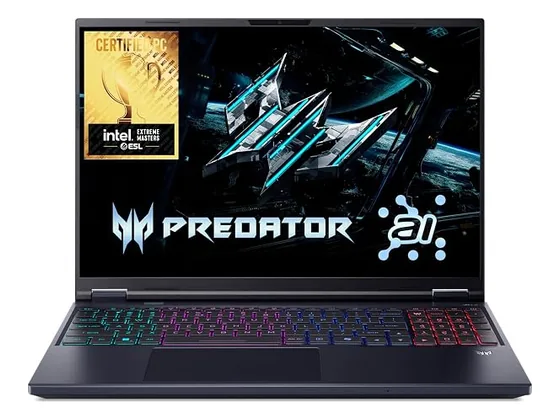
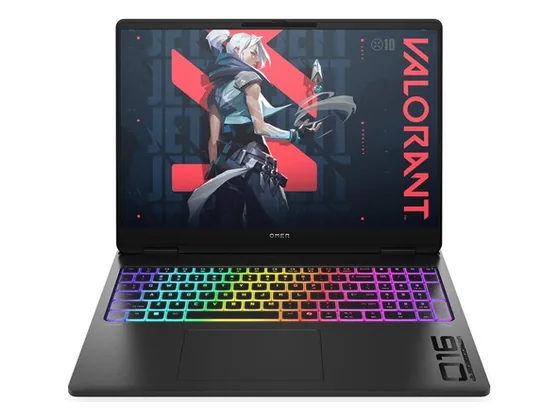

Acer Predator Helios Neo 16 AI : avis, tests et prix
Le verdict en une phrase. Une dalle OLED superbe et une RTX 5070 Ti à l'aise en QHD. En contrepartie : ça chauffe fort et l'autonomie est anecdotique.
N° 5 sur 10 dans le top 10 PC portables gaming.

Pour qui ?
Vous voulez jouer en QHD sur une dalle OLED, branché sur secteur.
Vous avez besoin d'autonomie : comptez 2 à 3 heures.
Le consensus de la presse
Sur 9 notes, 6 atteignent ou dépassent 8/10. La plus haute : 8,2/10 (Notebookcheck) ; la plus basse : 7,0/10 (Clubic). Ces notes portent sur la gamme : configurations ou générations proches de celle vendue aujourd'hui. Dernier test relevé : août 2026.
Où l'acheter
La configuration peut différer d'un marchand à l'autre : vérifiez la fiche avant d'acheter. Seuls les liens Amazon sont affiliés à ce jour ; les autres sont de simples liens directs. Aucun n'influence les notes ni le classement.
Tous les tests recensés
Chaque ligne renvoie vers le test d'origine. Les notes sont converties sur 10 ; « test » signale un article sans note chiffrée. Notre méthode.
- Notebookcheck8,2
- Chip.de8,0
- GamesRadar8,0
- MKAU Gaming8,0
- Multiplayer.it8,0
- Trusted Reviews8,0
- Clubic7,0
- Frandroid7,0
- PC Gamer7,0
- Geeknetictest
- PCWorldtest
- Trusted Reviewstest
Source du relevé : Synthèse CommentChoisir.
Les alternatives pour le même usage
Tout le top 10 → Acer Nitro V 16 AIUn grand écran rapide et une RTX 5060 dans un châssis sobre : un PC gamer accessible, bien noté par la presse sur cette génération.
N° 4 · Le bon élève
Acer Nitro V 16 AIUn grand écran rapide et une RTX 5060 dans un châssis sobre : un PC gamer accessible, bien noté par la presse sur cette génération.
N° 4 · Le bon élève
 MSI Crosshair 16 HX AIÉcran QHD+ 240 Hz et processeur HX : une configuration homogène, régulièrement notée 8/10, pour jouer confortablement en haute définition.
N° 6 · Le plus musclé
MSI Crosshair 16 HX AIÉcran QHD+ 240 Hz et processeur HX : une configuration homogène, régulièrement notée 8/10, pour jouer confortablement en haute définition.
N° 6 · Le plus musclé

HP Omen Max 16Grosses performances, écran 240 Hz et refroidissement efficace : une machine de jeu haut de gamme, lourde et chère.Questions fréquentes
Que pense la presse de l'ordinateur Acer Predator Helios Neo 16 AI ?
La note presse moyenne est de 7,7/10, calculée sur 9 notes (de 7,0 à 8,2/10). Une dalle OLED superbe et une RTX 5070 Ti à l'aise en QHD. En contrepartie : ça chauffe fort et l'autonomie est anecdotique.
Quels sont les points faibles relevés par les tests ?
Chauffe importante ; Autonomie de 2 à 3 heures ; Reflets sur l'écran.
À qui s'adresse le modèle Acer Predator Helios Neo 16 AI ?
Vous voulez jouer en QHD sur une dalle OLED, branché sur secteur. À éviter si : vous avez besoin d'autonomie : comptez 2 à 3 heures.
Où l'acheter, et à quel prix ?
Comptez environ 2 800 € (prix indicatif constaté en octobre 2026). Nous l'avons trouvé en vente chez Amazon. Les prix changent vite et la configuration peut différer d'un marchand à l'autre : seul le prix affiché par le marchand fait foi.